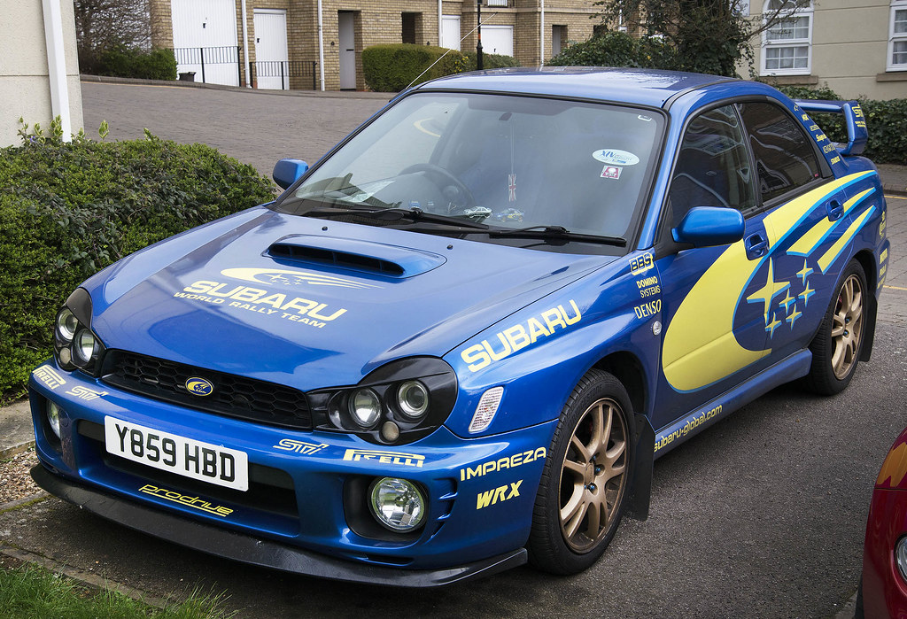

SUBARU
Слово "Subaru" - это японское название звездного скопления Плеяды в созвездии Тельца. Это название пошло от глагола "субару", что означает "быть собранными вместе". Но если в созвездии звезд много, то на логотипе компании их всего шесть. Это отсылает к тому, что компания Fuji Heavy Industries была образована в результате слияния шести других компаний. И если в 1953 году бренд только начинал свой путь из Японии, то сейчас об этой марке знают множество людей во всех странах.
В России довольно популярны три модели: Legacy, Impreza и Forester (он же Форик). Но также можно найти модели BRZ, которая является единственной заднеприводной Субару, SVX, которая в свое время выглядела довольно футуристично, Exiga, которая производится для японского рынка, и многие другие.
Довольно часто Outback путают с Legacy, а Импрезой называют и саму ее, и WRX, и WRX STI. Однако, WRX или WRX STI всегда Импреза, но не каждая Импреза окажется спортивной!
Чаще всего JDM машиной может оказаться Импреза до 2007 года выпуска или Форик 2002-2008 года выпуска. Их любят красить в фирменный цвет "555" и ставить золотые диски. Также субаристы обожают спойлеры разных форм и расширители арок на болтах. В салоне часто наблюдаются измененные ручки кпп, спортивные рули, полуковши WRX. Под капотом всегда двигатель не хуже ежа 204! Иначе на сотне лошадей толком не уехать.